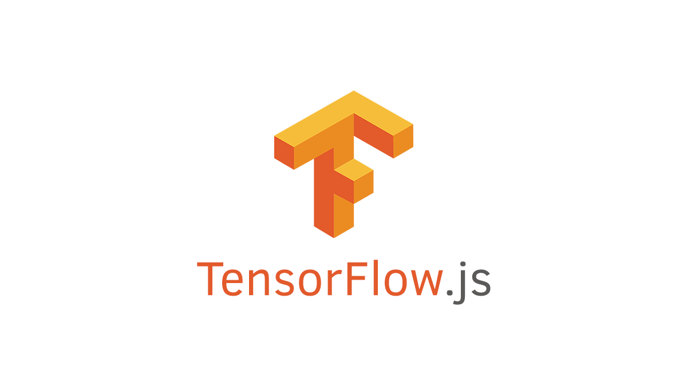
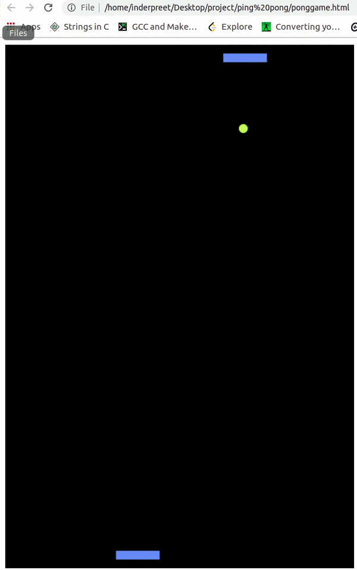

PING PONG GAME USING TensorFlow JS
- 360 DT
PING PONG GAME USING TensorFlow JS
TensorFlow JS, Machine Learning,JavaScript,HTML 5min read.

TensorFlow JS
Tensorflow JS is a library for Machine Learning developed by Google. It helps in developing the Machine Learning Models in JavaScript. It allows direct access to Node.js for its uses. It contains many Pretrained Models for Face Detection, Postnet, Image Classification, and much more.
To make a Ping Pong we need to make it with the help of JavaScript.
Prerequisites
1. Installation of Tensorflow.Js
Add the script tag in your HTML file to include Tensorflow
1: <script src=" https://cdn.jsdelivr.net/npm/@tensorflow/tfjs@2.0.0/dist/tf.min.js "></script>
Or Installation from Npm
1: yarn add @tensorflow/tfjs
Let’s Get Started
1. Create an HTML file with the name Pingpong.html
2. Add the below code in the HTML file.
1: <div id='main content'</div>
2: <script src="https://cdn.jsdelivr.net/npm/@tensorflow/tfjs@2.0.0/dist/tf.min.js"></script>
3: <script src="pingpong.js"</src></script>
From now we just need to add the PingPong code in the pingpong.js File
3.Let’s initiate the Model Definition:
1: // initial model definition
2: const model = tf.sequential();
3: model.add(tf.layers.dense({units: 256, inputShape: [8]})); //input is a 1x8
4: model.add(tf.layers.dense({units: 512, inputShape: [256]}));
5: model.add(tf.layers.dense({units: 256, inputShape: [512]}));
6: model.add(tf.layers.dense({units: 3, inputShape: [256]})); //returns a 1x3
7: const learningRate = 0.001;
8: const optimizer = tf.train.adam(learningRate);
9: model.compile({loss: 'meanSquaredError', optimizer: optimizer});
In the above code, we have used a Sequential Model with four Layers and the learning_rate=0.001. We have used Adam as the optimizer.
4. For this game of PingPong, we're going to take in the following elements as input characteristics:
- Player paddle x
- Computer paddle x
- Ball x
- Ball y
- Previous ball x.
- Previous ball y.
- Previous player paddle x.
- Previous computer paddle x.
5. Now let’s create some animation using JavaScript.
1: //animation of the pong game code
2: var animate = window.requestAnimationFrame || window.webkitRequestAnimationFrame || window.mozRequestAnimationFrame || function (callback) {
3: window.setTimeout(callback, 1000 / 60)
4: };
6.Using all the required variables for the Game
1: // variables for pong game.
2: var canvas = document.createElement("canvas");
3: var width = 400;
4: var height = 600;
5: canvas.width = width;
6: canvas.height = height;
7: var context = canvas.getContext('2d');
8: var player = new Player();
9: var computer = new Computer();
10: var ball = new Ball(200, 300);
11: var ai = new AI();
7.Now let’s create a function for the movement of the paddle
1: Paddle.prototype.move = function (x, y) {
2: this.x += x;
3: this.y += y;
4: this.x_speed = x;
5: this.y_speed = y;
6: if (this.x < 0) {
7: this.x = 0;
8: this.x_speed = 0;
9: } else if (this.x + this.width > 400) {
10: this.x = 400 - this.width;
11: this.x_speed = 0;
12: }
13: };
In the above code, we have created a function for the position of the paddle in the game. It will change relative to the Right or Left with the speed.
8. Let’s go ahead and create a function for controlling the paddle using Machine Learning.
// Custom code. Depending on what
// move passed here, we move the computer 4x.
// Network output is either -1, 0, or 1 (left, stay, right)
Computer.prototype.ai_update = function (move = 0) {
this.paddle.move(4 * move, 0);
};
Eventually, we will have a model that outputs 3 things: Move left, do nothing, move right, which will translate to the coordinate positions : [1,0,0], [0,1,0] or [0,0,1]. So, if the model outputs a [1,0,0], the argmax is 0. To translate the argmax to a -1,0, or 1, we do -1. We subtract 1 from 0, getting -1. Then -1 is passed to the ai_update function, where -1 is multiplied by 4 to be -4, and the paddle is moved -4 pixels on the x-axis (4 pixels left).
9. Now, in order to train our model, we need to collect the data, later we will store it to ArrayLists:
1: // Custom code:
2: // stores data for ai.
3: function AI(){
4: this.previous_data = null;
5: this.training_data = [[], [], []];
6: this.last_data_object = null;
7: this.turn = 0;
8: this.grab_data = true;
9: this.flip_table = true;
10: }
10.Saving Data Frame per frame in the list
AI.prototype.save_data = function(player, computer, ball){
if(!this.grab_data)
return;
11. The table is rotated to learn from the player but applies to the Computer Position. Basically in the PingPong Game, the Computer Position is inverted by 180 degrees as compared to the position of the human user.
1: // table is rotated to learn from player, but apply to computer position:
2: if(this.flip_table){
3: data_xs = [width - computer.x, width - player.x, width - ball.x, height - ball.y];
4: index = ((width - player.x) > this.previous_data[1])?0:(((width - player.x) == this.previous_data[1])?1:2);
5: }else{
6: data_xs = [player.x, computer.x, ball.x, ball.y];
7: index = (player.x < this.previous_data[0])?0:((player.x == this.previous_data[0])?1:2);
8: }
9: this.last_data_object = [...this.previous_data, ...data_xs];
10: this.training_data[index].push(this.last_data_object);
11: this.previous_data = data_xs;
12: }
12. Next, we need to decide when to layer from Computer to AI. The "computer" player just simply follows the ball around. The AI player is the one that is going to be trained to mimic what the actual player did. Basically AI will start learning from the User Data.
1: // Custom code:
2: // deciding whether to play as ai
3: AI.prototype.new_turn = function(){
4: this.previous_data = null;
5: this.turn++;
6: console.log('new turn: ' + this.turn);
7: //hm games til train?
8: if(this.turn > 5){ //The model will start training after 1 complete game
9: this.train();
10: computer.ai_plays = true;
11: this.reset();
12: }
13: }
In the above code once we have played more than 5 games the Machine Learning model will start training and you can change the training turns. After the training, the AI will be trained and will start to play like a human user. But 5 turns are way less for our Machine Learning Model to perform better. To increase the number of turns for better results more data means better results.
13.Code to Reset the training data after every 5 games:
1: // Custom code:
2: // empty training data to start clean
3: AI.prototype.reset = function(){
4: this.previous_data = null;
5: this.training_data = [[], [], []];
6: this.turn = 0;
7: }
14. Now finally a function for training based on the data we've collected:
1: // Custom code:
2: // trains a model
3: AI.prototype.train = function(){
4: console.log('balancing');
5: //shuffle attempt
6: len = Math.min(this.training_data[0].length, this.training_data[1].length, this.training_data[2].length);
7: if(!len){
8: console.log('nothing to train');
9: return;
10: }
11: data_xs = [];
12: data_ys = [];
13: for(i = 0; i < 3; i++){
14: data_xs.push(...this.training_data[i].slice(0, len));
15: data_ys.push(...Array(len).fill([i==0?1:0, i==1?1:0, i==2?1:0]));
16: }
17: console.log('training');
18: const xs = tf.tensor(data_xs);
19: const ys = tf.tensor(data_ys);
20: (async function() {
21: console.log('training2');
22: let result = await model.fit(xs, ys);
23: console.log(result);
24: }());
25: console.log('trained');
26: }
15. And then code to make predictions:
1: // Custom code:
2: AI.prototype.predict_move = function(){
3: console.log('predicting');
4: if(this.last_data_object != null){
5: //use this.last_data_object for input data
6: //do prediction here
7: //return -1/0/1
8: prediction = model.predict(tf.tensor([this.last_data_object]));
9: return tf.argMax(prediction, 1).dataSync()-1;
10: }
11: }
16.Finally the finishing code from the original Ping Pong Game
1: // Original pong code:
2: document.body.appendChild(canvas);
3: animate(step);
4: window.addEventListener("keydown", function (event) {
5: keysDown[event.keyCode] = true;
6: });
7: window.addEventListener("keyup", function (event) {
8: delete keysDown[event.keyCode];
9: });
Finally the Game is ready:

Check out the Complete Code at our Github Repository.
References
● Object Detection -IOU-Intersection Over Union.● Learn more about Mask F-RCNN .